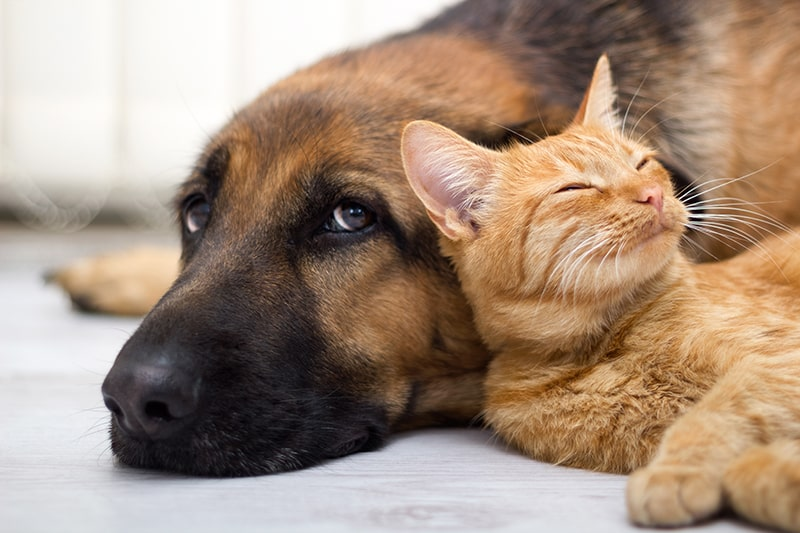

CUCCIOLI ALLEGRI
Chi siamo?
Siamo un gruppo di persone con una grande passione: gli animali. Il nostro canile nasce dal desiderio di offrire una seconda possibilità a cani e gattini che, per diversi motivi, hanno perso la loro casa. Ogni giorno ci prendiamo cura di loro con amore, pazienza e rispetto, perché per noi non sono solo ospiti... sono parte della nostra famiglia. Accogliamo, curiamo, coccoliamo e, soprattutto, cerchiamo per ognuno di loro una nuova casa dove poter ricominciare. Crediamo che ogni cane meriti una vita piena di affetto e dignità, e facciamo del nostro meglio per regalargliela. Se anche tu ami gli animali come noi, vieni a conoscerci: potresti trovare un nuovo amico che ti sta già aspettando con la coda che scodinzola!